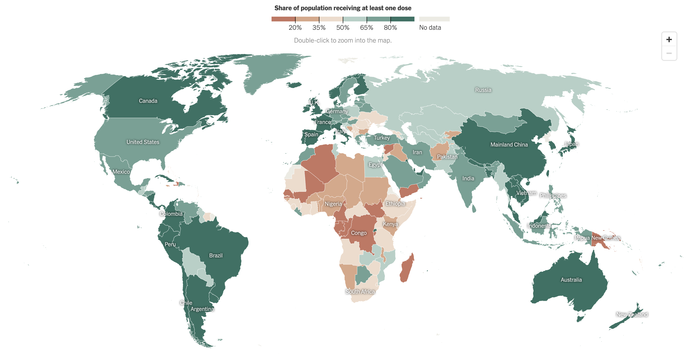

In the following scenarios, click the arrows or swipe through the images to see how a virus with an R0 ~2-3 infects a population
Consider the following population where each member is colored gray, representing an uninfected and non-vaccinated patient


Now imagine ~75% of the population were vaccinated (blue) against the red strain of the virus. See how the virus spreads now:


High vaccination rates provide a 'wall' of immunity to those who are not vaccinated, note how some unvaccinated members remain uninfected
Now let's create a population with a ~99% vaccination rate, all but one member is vaccinated against the red strain.


What happened? The only unvaccinated member contracted the original strain of the virus and then the virus mutated into a more contagious and immune-evasive version (now in green). The prior vaccination is not effective at preventing green-strain infection. As a result, all members are infected regardless of their vaccination status, similar to the first scenario.
The individualistic mindset to not get vaccinated cost the population's herd immunity. The promotion of vaccination and prevention measures from governments is often inconsistent, leading the community to lose trust and rely on political figures for their information. Elected officials want to retain their office and preserve approval ratings from their community. This creates a dynamic where a virus and vaccines become political, and where individuals make blunt decisions, disregarding the health of the general public.
This is a small scale example, however it highlights the importance of high vaccination rates. All it takes is one person to cause a virus to mutate into one that can avoid prior immunity.
We have seen this outcome throughout the COVID-19 pandemic. The Omicron variant was discovered after vaccines had become mainstream. If everyone in the world was vaccinated, COVID-19 would have had a much smaller chance to mutate into something like Omicron.
Vaccine distribution is not equal across the globe, however. Wealthier countries are better equipped to handle new waves of COVID-19 because of their relatively high vaccination rates. In contrast, in-development countries have less access to vaccines because of costs.
Not only do wealthy nations need to distribute vaccines to lower-income regions but they also need to educate those populations on the importance of vaccinations.
If you live in the United States you are lucky enough to have free, uncontested access to most mainstream vaccines, including COVID-19 vaccines. Do your part and get vaccinated, as well as receive the updated Bivalent booster which targets Omicron variants of COVID-19.
Find a vaccination site at vaccines.gov
Sources From Class:
Vaccine Infodemiology (COVID 19 Immunity) with Jessica Malaty RiveramThe Politics of Pandemics: Why Some Countries Respond Better Than Others
What Makes Vaccines Social?
Social capital, trust in health information, and acceptance of Measles-Rubella vaccination campaign in Tamil Nadu: A case-control study